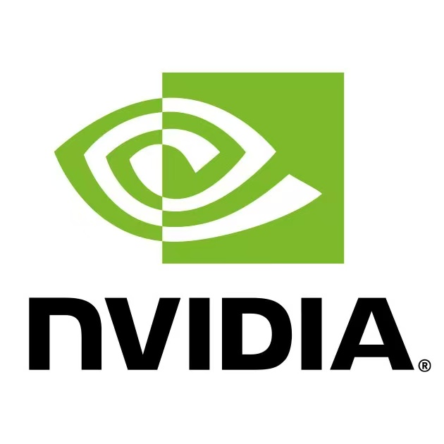
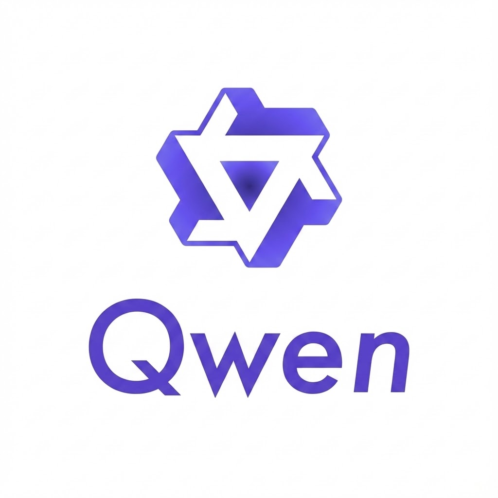
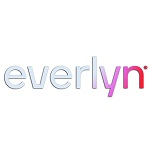

Yatian Pang 庞雅天
I am a Research Scientist at NVIDIA Cosmos Lab. My long-term goal is to build general-purpose AI agents that can reason about the physical world, simulate possible futures, and choose effective actions using world models that unify multimodal understanding and generation.
I obtained my Ph.D. at the National University of Singapore. I feel incredibly lucky to be supervised by Prof. E. H. Francis Tay, collaborate closely with Prof. Li Yuan from PKU, and gain valuable experience working with Alibaba's Qwen, Everlyn AI, and A*STAR.

Latest
- Jun 2026 Cosmos 3 released ↗
- Jan 2026 Officially Dr. P!
- Dec 2025 Join NVIDIA as Research Scientist!
Selected projects
Research in focus
World models · 2026
Cosmos 3
Cosmos 3, a family of omnimodal world models designed to jointly process and generate language, image, video, audio, and action sequences within a unified mixture-of-transformers architecture.
Multimodal understanding · 2025
Qwen3-VL
One of the most popular open-sourced VLMs. Key contributions to long and streaming video understanding within the Qwen3-VL framework, achieving SOTA results across multiple video benchmarks.
Selected publications
All publications ↗UniWorld: High-Resolution Semantic Encoders for Unified Visual Understanding and Generation
Next Patch Prediction for Autoregressive Visual Generation
DreamDance: Animating Human Images by Enriching 3D Geometry Cues from 2D Poses
MoE-LLaVA: Mixture of Experts for Large Vision-Language Models
LanguageBind: Extending Video-Language Pretraining to N-Modality by Language-Based Semantic Alignment
Masked Autoencoders for Point Cloud Self-Supervised Learning
Research Experience

NVIDIA, Singapore
Dec. 2025 - Present
Research Scientist


A*STAR, Singapore
Oct. 2021 - Dec. 2023
Research Engineer & Research Intern. Mentor: Dr. Xiang Li, Prof. Zhenghua Chen
Education
National University of Singapore, Singapore
Aug. 2021 - Jan. 2026
PhD
Peking University, China
Jul. 2023 - Dec. 2024
Visiting Scholar
National University of Singapore, Singapore
Aug. 2020 - Jun. 2021
MSc
Soochow University, China
Sep. 2016 - Jun. 2020
BEng
Beyond research